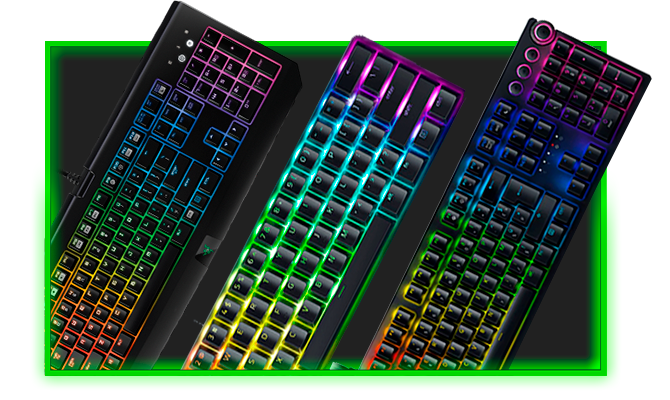
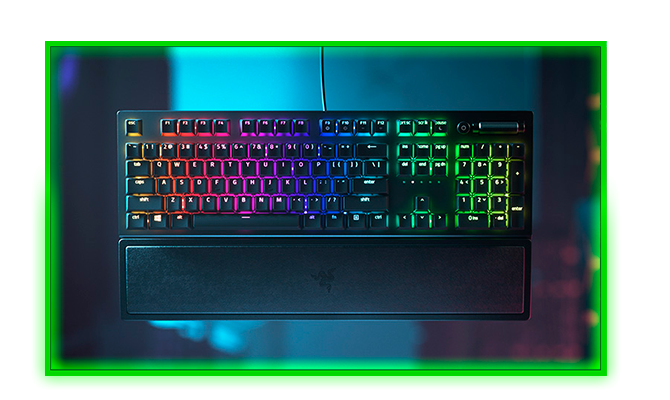
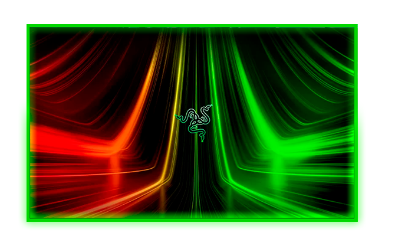

See the differences and the main reasons to buy a gaming keyboard instead of a conventional one, and understand why Razer has the best keyboards.

The Keyboard and Its Function
The keyboard plays a prominent role in optimizing productivity and the entertainment experience. In the context of gaming, where every millisecond matters, the keyboard becomes a tool that transcends mere command input.

Advantages of a gaming keyboard
A gaming keyboard offers an enhanced gaming experience, thanks to its responsive mechanical switches, customizable backlighting, and programmable keys. It provides more precise and agile gameplay, making it an essential ally for gaming enthusiasts, far superior to a conventional keyboard

Why choose Razer?
Razer is known for providing high-quality products designed specifically for gamers, ranging from keyboards and mice to laptops and headsets. The brand is synonymous with exceptional performance, durability, and innovation. When choosing Razer, consumers can expect cutting-edge products that enhance their gaming and technology experience.